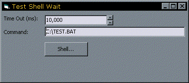

ShellWait Demonstration (19K)
ShellWait Demonstration (19K)
 15 Jun 1998
15 Jun 1998
First Version

Shell an application and wait asynchronously for completion
Surprisingly often it comes in handy to be able to shell another application and wait for it to complete. This sample shows what I think is the best way to do it. At least, this method has been totally reliable for me. Its better than some methods I have seen because the application isn't frozen whilst the shelled application runs. Therefore the display is kept refreshed and it doesn't look like the app has hung.
The method makes use of the Win32 OpenProcess method. Here is the code:
Private Declare Sub Sleep Lib "kernel32" ( _
ByVal dwMilliseconds As Long)
Private Declare Function GetExitCodeProcess Lib "kernel32" ( _
ByVal hProcess As Long, lpExitCode As Long) As Long
Private Declare Function timeGetTime Lib "winmm.dll" () As Long
Private Declare Function OpenProcess Lib "kernel32" ( _
ByVal dwDesiredAccess As Long, ByVal bInheritHandle As Long, ByVal dwProcessId As Long) As Long
Private Const STILL_ACTIVE = &H103
Private Const PROCESS_QUERY_INFORMATION = &H400
Private Declare Function CloseHandle Lib "kernel32" ( _
ByVal hObject As Long) As Long
Public Function ShellAndWaitForTermination( _
sShell As String, _
Optional ByVal eWindowStyle As VBA.VbAppWinStyle = vbNormalFocus, _
Optional ByRef sError As String, _
Optional ByVal lTimeOut As Long = 2000000000 _
) As Boolean
Dim hProcess As Long
Dim lR As Long
Dim lTimeStart As Long
Dim bSuccess As Boolean
On Error GoTo ShellAndWaitForTerminationError
' This is v2 which is somewhat more reliable:
hProcess = OpenProcess(PROCESS_QUERY_INFORMATION, False, Shell(sShell, eWindowStyle))
If (hProcess = 0) Then
sError = "This program could not determine whether the process started." & _
"Please watch the program and check it completes."
' Only fail if there is an error - this can happen
' when the program completes too quickly.
Else
bSuccess = True
lTimeStart = timeGetTime()
Do
' Get the status of the process
GetExitCodeProcess hProcess, lR
' Sleep during wait to ensure the other process gets
' processor slice:
DoEvents: Sleep 100
If (timeGetTime() - lTimeStart > lTimeOut) Then
' Too long!
sError = "The process has timed out."
lR = 0
bSuccess = False
End If
Loop While lR = STILL_ACTIVE
End If
ShellAndWaitForTermination = bSuccess
Exit Function
ShellAndWaitForTerminationError:
sError = Err.Description
Exit Function
End Function
For more flexibility, you might want to replace the VB Shell call with a call to the ShellExecute API function instead. See my article "Using ShellExecute from Visual Basic - start any document from its filename only" for more details.